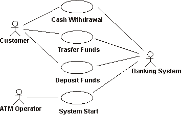
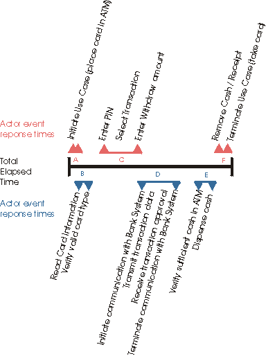

Artifacts >
Artifacts >
 Test Artifact Set >
Test Artifact Set >
 {More Test Artifacts} >
Test Definition >
{More Test Artifacts} >
Test Definition >
 Workload Analysis Model >
Workload Analysis Model >
 Guidelines
Guidelines
Artifacts >
Test Artifact Set >
{More Test Artifacts} >
Test Definition >
Workload Analysis Model >
Guidelines
Guidelines:
|
 Workload Analysis Document |
A workload analysis document identifies the variables and defines their values used in the different performance tests to simulate or emulate the actor characteristics, end-user's business functions (use cases), load, and volume. |
Software quality is assessed along different dimensions, including reliability, function, and performance (see Concepts: Quality Dimensions). The Workload Analysis Document (see Artifact: Workload Analysis Document) is created to identify and define the different variables that affect or influence an application or system's performance and the measures required to assess performance. The workload analysis document is used by the following roles:
The information included in the workload analysis document focuses on characteristics and attributes of following primary variables:
Performance tests, as their name implies, are executed to measure and evaluate the performance characteristics or behaviors of the target-of-test. Successfully designing, implementing, and executing performance tests requires identifying and using values to the variables that represent realistic, and exceptional values for these variables.
Two types of use cases are identified and used for performance testing:
Not all use cases being implemented in the target-of-test may be the target of a performance test. Critical use cases are those use cases that will be the focus of a performance test - that is their performance behaviors will be measured and evaluated.
To identify the critical use cases, identify those use cases that meet one or more of the following criteria:
List the critical use case for inclusion in the performance test.
As the critical use cases are being identified and listed, the use case flow of events should be reviewed. Specifically, begin to identify the specific sequence of events between the actor (type) and system when the use case is executed.
Additionally, identify (or verify) the following information:
Unlike critical use cases, which are the focus of performance test, significant use cases are those use cases that may impact the performance behaviors of critical use cases. Significant use cases include those use cases that meet the one or more of the following criteria:
As the significant use cases are being identified and listed, review the use case flow of events and additional information as done above for the critical use cases.
Successful performance tests requires identifying not just the actors executing the critical and significant use cases, but must also simulate / emulate actor behavior. That is, one instance of an actor may interact with the target-of-test differently (take longer to respond to prompts, enter different data values, etc.) while executing the same use case and use-case flow of events as another instance of an actor. Consider the simple use cases below:

Actors and use cases in an ATM machine.
The actor "Customer" in the first instance of the use-case execution, in an experienced ATM user, but in another instance of the actor, it is an inexperienced ATM user. The experienced ATM actor quickly navigates through the ATM user-interface and spends little time reading each prompt, instead, pressing the buttons by rote. The inexperienced ATM actor however, reads each prompt and takes extra time to interpret the information before responding. Realistic performance tests reflect this difference to ensure accurate assessment of the performance behaviors when the target-of-test is deployed.
Begin by identifying the actors for each use case identified above. Then identify the different actor stereotypes that may execute each use case. In the ATM example above, we may have the following actor stereotypes:
For each actor stereotype, identify the different values for actor attributes such as:
Additionally, for each actor stereotype, identify their work profile, specific all the use cases and flows they execute, and the percentage of time or proportion of effort spent by the actor executing the use cases. Identifying this information is used in identifying and creating a realistic load (see Load and Load Attributes below).
The specific attributes and variables of the deployment system that uniquely identify the environment must also be identified, as these attributes also impact the measurement and evaluation of performance. These attributes include:
Identify and list the system attributes and variables that are to be considered for inclusion in the performance tests. This information may be obtained from several sources, including:
As stated previously, load is one of the factors impacting the performance behaviors of a target-of-test. Load is defined as:
Accurately identifying the load that will be used to execute and evaluate the performance behaviors is critical. Typically, performance testing is executed several times, using different loads, each load a variation of the attributes described below:
For each load used to evaluate the performance of the target-of-test, identify the values for each of the above variables. The values used for each variable in the different loads may be obtained from the Business Use-Case Model (see Artifact: Business Use-Case Model), or derived by observing or interviewing actors. At a minimum, three loads should be derived:
When performance testing includes Stress Testing (see Concepts: Performance Test and Concepts: Test Types), several additional loads should be identified, each specifically targeting and setting one system or load variable to be beyond the expected normal capacity of the deployed system.
Successful performance testing can only be achieved if the tests are measured and the performance behaviors evaluated. In identifying performance measurements and criteria, the following factors should be considered:
There are many different measurements that can be made during test execution. Identify the significant measurements to be made and justify why they are the most significant measurements.
Listed below are the more common performance behaviors monitored or captured:
See Concepts: Key Measures of Test for additional information
In the Use Cases and Use Case Attributes section above, it was noted that not all use case are executed for performance testing. Similarly, not all performance measures are made for each executed use case. Typically there is a specific use case flow (or several) that is (are) targeted for measurement. Or there may be a specific sequence of events within a specific use case flow of events that will be measured to assess the performance behavior. Care should be taken to select the most significant starting and ending "points" for the measuring the performance behaviors. The most significant ones are typically those the most visible sequences of events or those that we can affect directly through changes to the software or hardware.
For example, in the ATM - Cash Withdraw use case identified above, we may measure the performance characteristics of the entire use case, from the point where the Actor initiates the withdrawal, to the point in which the use case is terminated - that is, the Actor receives their bank card and the ATM is now ready to accept another card, as shown by the black "Total Elapsed Time" line in the diagram below:

Notice, however, there are many sequences of events that contribute to the total elapsed time, some that we may have control over (such as read card information, verify card type, initiate communication with bank system, etc., items B, D, and E above), but other sequences, we have not control over (such as the actor entering their PIN or reading the prompts before entering their withdrawal amount, items A, C, and F). In the above example, in addition to measuring the total elapsed time, we would measure the response times for sequences B, D, and E, since these events are the most visible response times to the actor (and we may affect them via the software / hardware for deployment).
Once the critical performance measures and measurement points have been identified, review the performance criteria. Performance criteria are stated in the Supplemental Specifications (see Artifact: Supplementary Specifications). If necessary revise the criteria.
Two criteria are often used for performance measurement:
Response time, measured in seconds, or throughput rate, measured by the number of transactions (or messages) processed is the main criteria.
For example, using the Cash Withdraw use case, the criteria is stated as "events B, D, and E (see diagram above) must each occur in under 3 seconds (for a combined total of 9 seconds)". If during testing, we note that that any one of the events identified as B, D, or E takes longer than the stated 3 second criteria, we would note a failure.
Percentile measurements are combined with the response times and / or throughput rates and are used to "statistically ignore" measurements that are outside of the stated criteria. For example, the performance criteria for the use case was now states "for the 90th percentile, events B, D, and E must each occur in under 3 seconds ...". During test execution, if we measure 90 percent of all performance measurements occur within the stated criteria, no failures are noted.
|
Rational Unified
Process
|